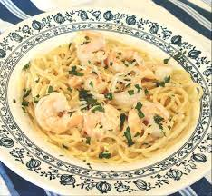

Shrimp Carbonara

Easy to cook and very tasty
Difficulty: Easy
Cooking time: 30 Minutes
Ingredients
- 1 (16 ounce) package spaghetti
- 20 uncooked medium shrimp, peeled and deveined
- 2 tablespoons extra-virgin olive oil, divided
- salt and ground black pepper to taste
- 1 small onion, minced
- 2 cloves garlic, minced
- 1 cup skim milk
- ¼ cup half-and-half
- 1 cup grated Parmesan cheese
- 4 eggs, beaten
- 1 tablespoon fresh parsley
Directions
- Bring a large pot of lightly salted water to a boil. Cook spaghetti in the boiling water, stirring occasionally, until tender yet firm to the bite, about 12 minutes. Drain and immediately return spaghetti to pot.
- While spaghetti is cooking, place shrimp in a large pan over medium heat. Add 1/2 the olive oil; season with salt and pepper. Cook and stir until shrimp is mostly opaque, about 5 minutes. Add shrimp to the pot of cooked and drained pasta; cover and keep warm.
- Heat the remaining olive oil in the same pan. Cook and stir onion until translucent, about 5 minutes. Add garlic; cook until fragrant, about 1 minute more. Add milk and half-and-half; cook until heated through, about 3 minutes.
- Pour 1/4 cup of the milk mixture into a bowl; add eggs and stir until warmed through. Pour into the pot with the shrimp and pasta and add the milk mixture. Top with Parmesan cheese and parsley.